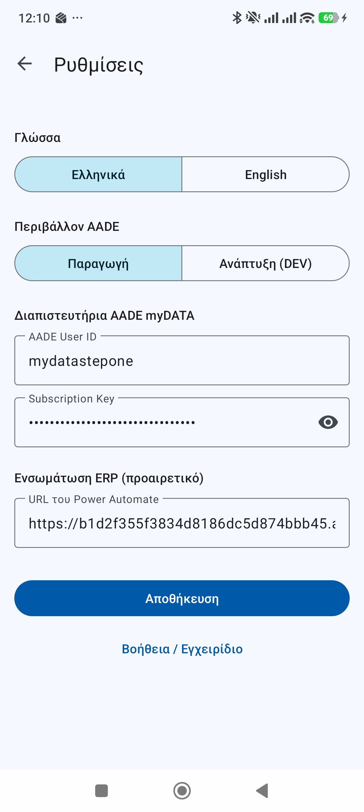
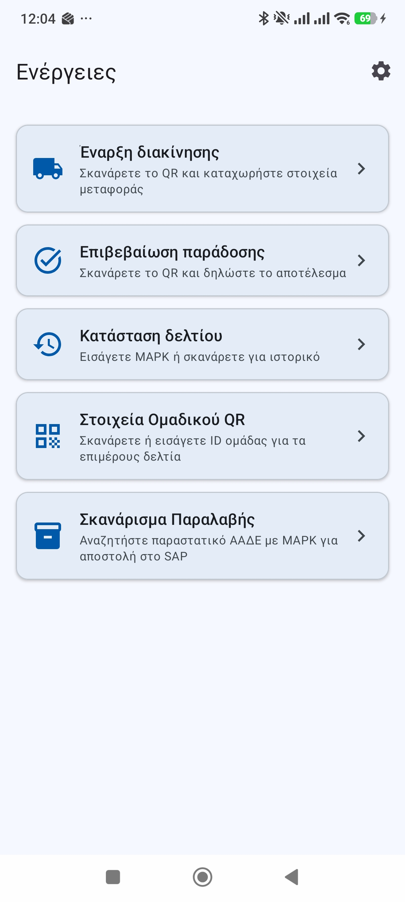
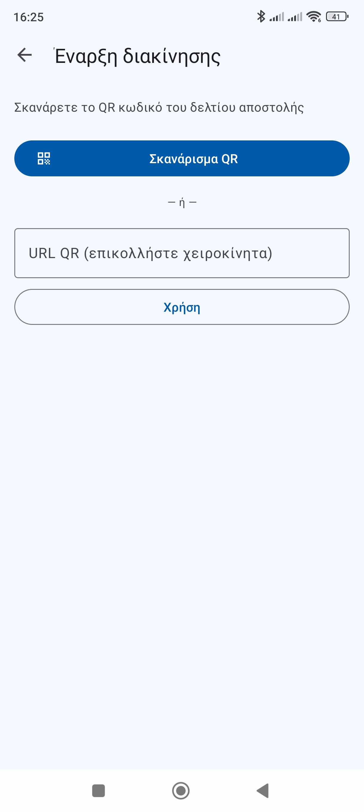
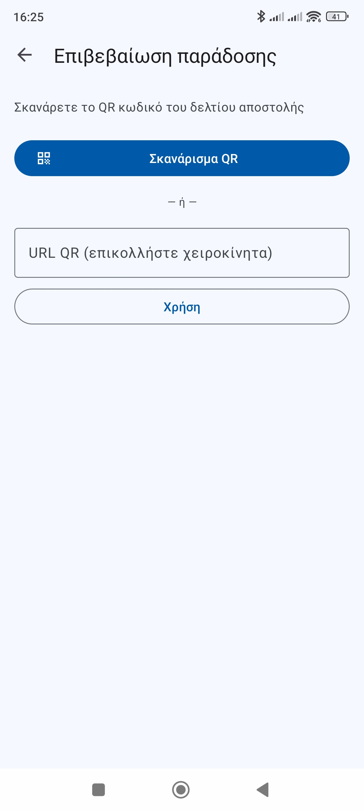
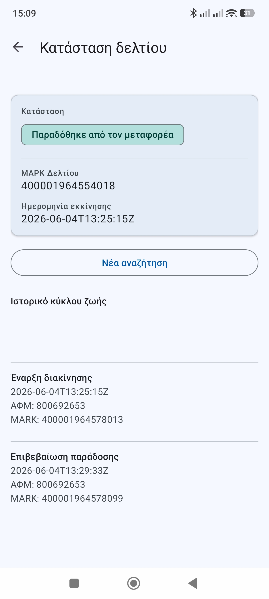
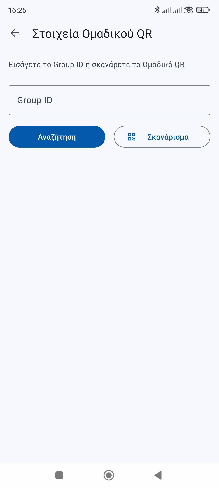

Εγχειρίδιο Χρήσης · by StepOne SA · Έκδοση 1.5
Η εφαρμογή eDeltio διανέμεται μέσω Google Play Store και απαιτεί Android 7.0 ή νεότερο.
Κατά την πρώτη εκκίνηση η εφαρμογή σας μεταφέρει αυτόματα στις Ρυθμίσεις.
Επιλέξτε Ελληνικά ή English. Η αλλαγή εφαρμόζεται αμέσως.
| Επιλογή | Χρήση |
|---|---|
| Παραγωγή (προεπιλογή) | Πραγματικά δεδομένα — για καθημερινή χρήση |
| Ανάπτυξη (DEV) | Δοκιμαστικό περιβάλλον AADE — μόνο για δοκιμές |
Το πεδίο αυτό απαιτείται για τη λειτουργία Σκανάρισμα Παραλαβής. Συμπληρώστε το URL του HTTP trigger του Power Automate που παρέχεται από τον διαχειριστή του συστήματος SAP.

Εικ. 1 — Οθόνη Ρυθμίσεων
Μετά την αποθήκευση των ρυθμίσεων εμφανίζεται η κεντρική οθόνη με τις διαθέσιμες ενέργειες:

Εικ. 2 — Κεντρική οθόνη με τις διαθέσιμες ενέργειες
| # | Ενέργεια | Περιγραφή |
|---|---|---|
| 1 | Έναρξη Διακίνησης | Δήλωση ανάληψης δελτίου από μεταφορέα |
| 2 | Επιβεβαίωση Παράδοσης | Καταχώριση αποτελέσματος παράδοσης |
| 3 | Κατάσταση Δελτίου | Έλεγχος τρέχουσας κατάστασης δελτίου αποστολής |
| 4 | Στοιχεία Ομαδικού QR | Διαχείριση ομαδικού QR αποστολής |
| 5 | Σκανάρισμα Παραλαβής | Αναζήτηση παραστατικού AADE και αποστολή στοιχείων στο SAP |
Οι ενέργειες 1–4 αφορούν τη διαχείριση δελτίων αποστολής. Η ενέργεια 5 αφορά την παραλαβή εμπορευμάτων και την ενημέρωση του SAP.
Χρησιμοποιείται για να δηλώσετε την ανάληψη ενός δελτίου αποστολής από τον μεταφορέα.

Εικ. 3 — Έναρξη Διακίνησης
Χρησιμοποιείται μετά την παράδοση για να δηλώσετε το αποτέλεσμα.

Εικ. 4 — Επιβεβαίωση Παράδοσης
Από την κεντρική οθόνη μπορείτε να ελέγξετε την κατάσταση ενός δελτίου αποστολής.
Εικ. 5 — Εισαγωγή MARK

Εικ. 6 — Αποτέλεσμα αναζήτησης με χρωματιστή ένδειξη κατάστασης
Χρησιμοποιείται για τη διαχείριση ομαδικής αποστολής — όταν πολλά δελτία αποστολής ομαδοποιούνται κάτω από ένα κοινό QR αναγνωριστικό.

Εικ. 7 — Στοιχεία Ομαδικού QR
Χρησιμοποιείται για την αναζήτηση παραστατικού στο σύστημα AADE με βάση τον αριθμό MARK και την αυτόματη αποστολή των στοιχείων στο σύστημα SAP μέσω Power Automate.
| Πεδίο | Περιγραφή |
|---|---|
| ΜΑΡΚ | Μοναδικός αριθμός καταχώρησης παραστατικού |
| ΑΦΜ Προμηθευτή | ΑΦΜ του εκδότη του παραστατικού |
| Σειρά | Σειρά παραστατικού |
| ΑΑ | Αύξων αριθμός παραστατικού |
| Ημερομηνία Έκδοσης | Ημερομηνία έκδοσης παραστατικού |
| Είδος Παραστατικού | Κωδικός τύπου παραστατικού (π.χ. 9.3) |
| AADE User | Ο χρήστης που εκτέλεσε την αναζήτηση |
| Ώρα Σκαναρίσματος | Ημερομηνία και ώρα αναζήτησης |
Στο κάτω μέρος της κάρτας αποτελέσματος εμφανίζεται η κατάσταση της αποστολής στο SAP:
| Ένδειξη | Σημασία |
|---|---|
| Spinner (φόρτωση) | Αποστολή δεδομένων στο SAP σε εξέλιξη |
| ✓ System has been updated | Τα δεδομένα στάλθηκαν επιτυχώς στο SAP |
| ✗ Αποτυχία αποστολής + κουμπί Επανάληψη | Σφάλμα επικοινωνίας — πατήστε για επανάληψη |
| Κατάσταση | Ένδειξη | Σημασία |
|---|---|---|
| REGISTERED | Μπλε | Το δελτίο έχει καταχωριστεί στο σύστημα |
| DISPATCHED | Κίτρινο | Έχει ανατεθεί σε μεταφορέα |
| IN_TRANSIT | Κίτρινο | Σε μεταφορά |
| DELIVERED | Πράσινο | Παραδόθηκε επιτυχώς |
| PARTIAL_DELIVERY | Μωβ | Μερική παράδοση |
| DELIVERY_FAILED | Κόκκινο | Η παράδοση απέτυχε |
| CANCELLED | Γκρι | Το δελτίο ακυρώθηκε |
| Σφάλμα | Αιτία | Λύση |
|---|---|---|
| 807 Invalid QR | Το QR δεν ανήκει σε δελτίο αποστολής | Βεβαιωθείτε ότι σκανάρετε το σωστό QR |
| 800 ValidationError | Το δελτίο δεν επιτρέπει αυτή την ενέργεια | Ελέγξτε πρώτα την κατάσταση του δελτίου |
| 404 Not found | Ο MARK δεν βρέθηκε στο σύστημα | Επαληθεύστε τον αριθμό MARK |
| 403 Forbidden | Λάθος διαπιστευτήρια | Ελέγξτε User ID και Subscription Key στις Ρυθμίσεις |
| Invalid Greek VAT | Λάθος μορφή ΑΦΜ | Επαληθεύστε το ΑΦΜ (9 ψηφία) |
| QR resolution failed | Αδυναμία ανάγνωσης κρυπτογραφημένου QR | Εισάγετε τον MARK χειροκίνητα |
| No internet connection | Δεν υπάρχει σύνδεση | Ελέγξτε Wi-Fi ή δεδομένα κινητής |
| Δεν βρέθηκε παραστατικό | Ο MARK δεν αντιστοιχεί σε παραστατικό που αφορά τον χρήστη | Επαληθεύστε τον αριθμό MARK |
| Αποτυχία αποστολής στο SAP | Πρόβλημα επικοινωνίας με το Power Automate | Ελέγξτε το URL στις Ρυθμίσεις και πατήστε «Επανάληψη αποστολής» |
Για τεχνική υποστήριξη ή απόκτηση διαπιστευτηρίων AADE επικοινωνήστε με: